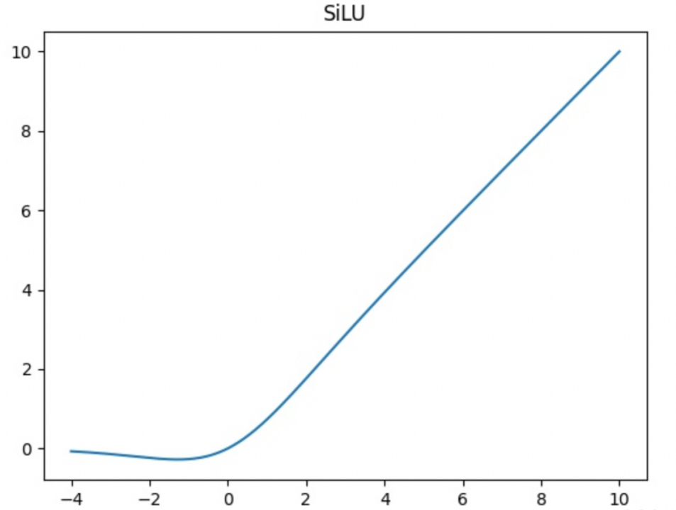
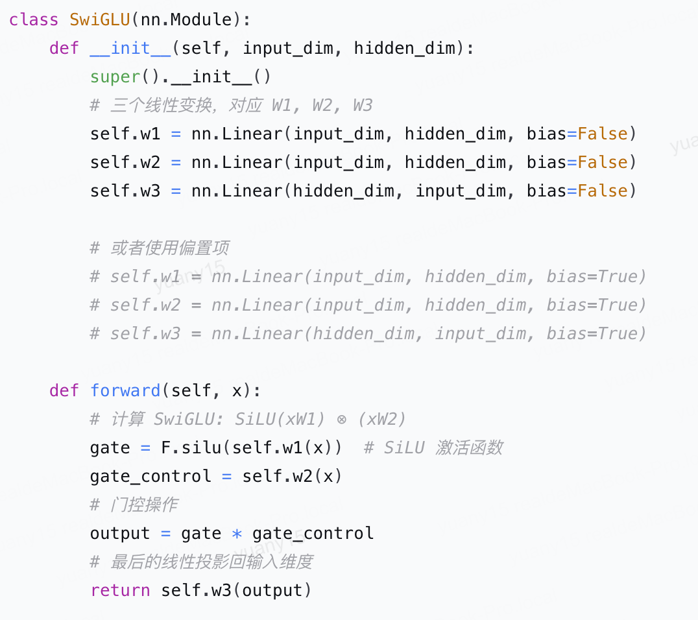
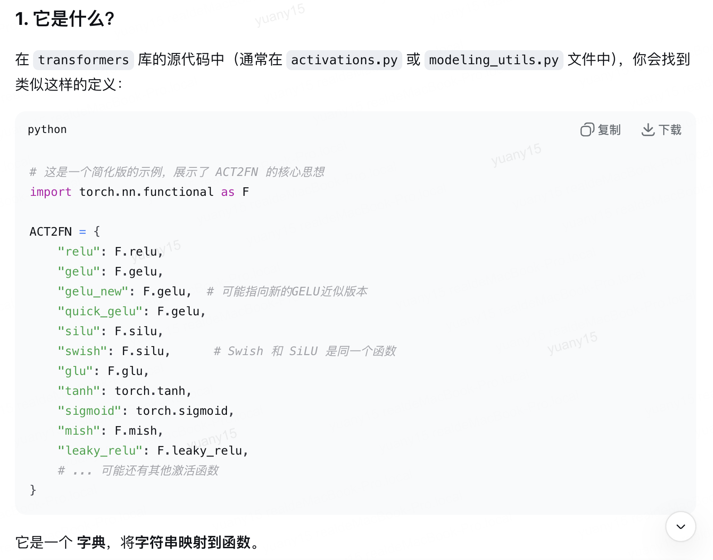

激活函数：SiLU 与 SwiGLU
本文目录 4 个章节 · 展开查看
先区分两个层级：SiLU 是作用于单个数值的非线性函数；SwiGLU 是由可学习投影、SiLU 和逐元素乘法组成的 MLP 模块。
1. SiLU 的定义
对于一个输入标量 ，先定义 sigmoid ，它输出一个介于 0 与 1 之间的值；再让这个值与输入 相乘，得到 SiLU：
SiLU 是平滑的自门控函数：门值由输入自身通过 sigmoid 产生。Swish 一般写为 ，取 时与 SiLU 相同。
“自门控”可以这样理解：由输入自己生成一个连续的门值，再用它调节自己的幅度。较大的正输入通常大部分通过，较负输入被明显压低；这不是额外引入一组门控参数。
为了判断梯度怎样流动，先使用 sigmoid 的导数 ，再对 使用乘积求导法则：

曲线与公式一致：负区间存在轻微下凹，不是单调函数。导数在约 处为零，在很负的位置也会趋近于零，因此不能说“负区间始终有非零梯度”。
2. 与 ReLU 比较
ReLU 在负半轴的导数为零；若某个单元对相关输入长期落入负区间，可能难以通过自己的局部梯度恢复。但其他参数、输入分布与优化器状态的变化仍可能改变其输入，不能绝对说“一旦死亡永不恢复”。
SiLU 没有整段负半轴恒零的梯度区间，有助于缓解这一现象；平滑性不自动保证更稳定或更快收敛。性能取决于架构、初始化、训练设置与硬件，不能把某类 Transformer 上的经验推广到所有网络。
3. SwiGLU 的定义与参数量
设 是 token 表示矩阵，输入宽度为 ，中间特征宽度为 。我们定义三个可学习投影： 生成 gate 分支， 生成 up 分支， 将中间结果映射回宽度 。采用行向量记号、忽略偏置时：
这里 是经过 SiLU 的 gate 分支表示， 是 up 分支表示；二者形状相同， 表示逐元素相乘，让一条分支调节另一条分支的特征。再经过 down 投影得到输出 。注意 SiLU 的输出并不被限制在 0 到 1，不能把整个 当成概率。
两个上投影 ，下投影 ，因此参数数目为 ：
这里 gate_proj 和 up_proj 的矩阵都是可学习参数。SiLU 的“自门控”不表示整个 SwiGLU 没有可学习的门控投影。
# 三个无偏置投影，* 为逐元素乘法。
y = down_proj(torch.nn.functional.silu(gate_proj(x)) * up_proj(x))
配图与实现示例
注意激活函数映射表中的名称不一定指向同一个函数：quick_gelu、gelu_new 等变体不能一律等同于 F.gelu；Swish 仅在 β=1 时等于 SiLU。



4. 来源
- PyTorch SiLU。
- GLU Variants Improve Transformer。
- 导数及参数量由本页定义直接推导；具体性能结论需附实验配置。